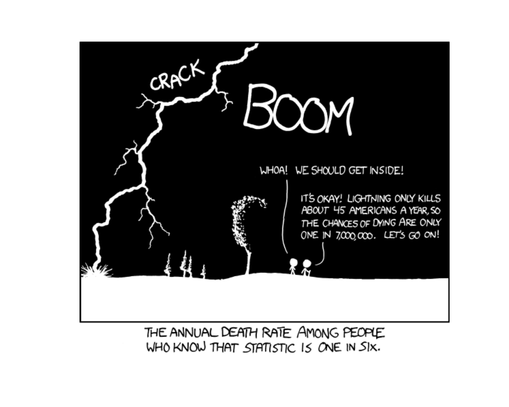
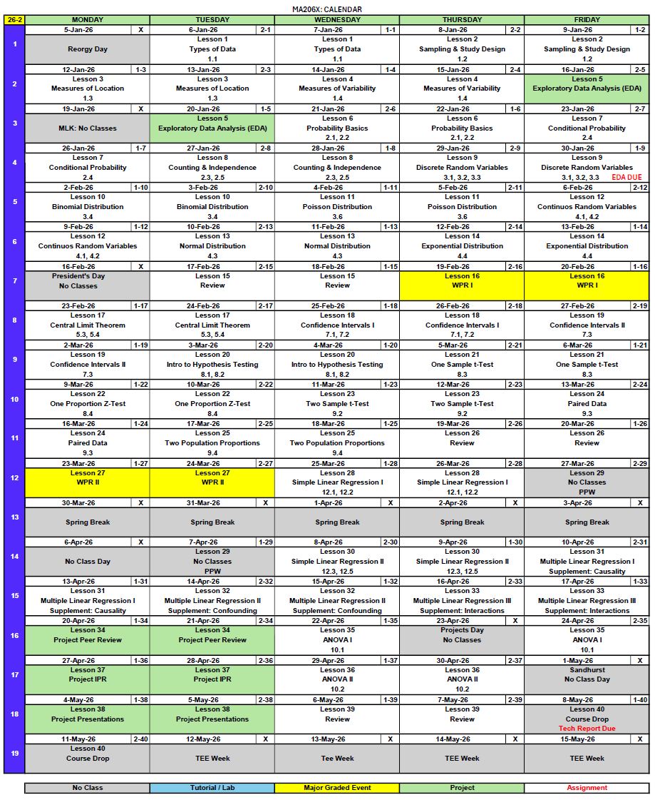
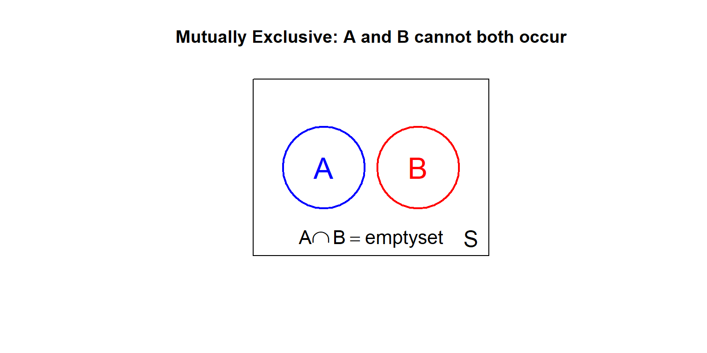
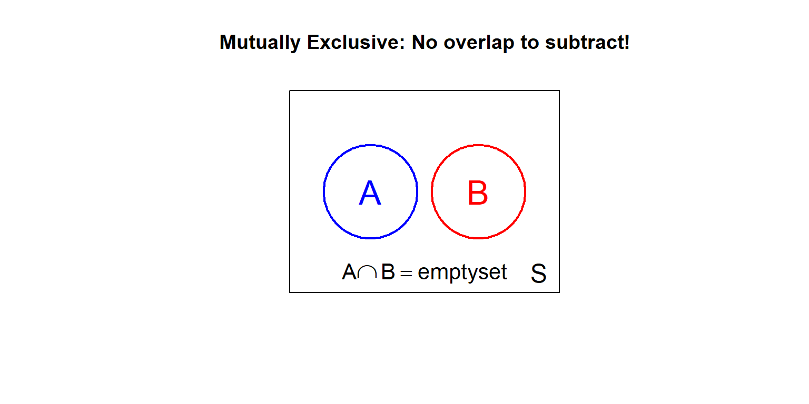
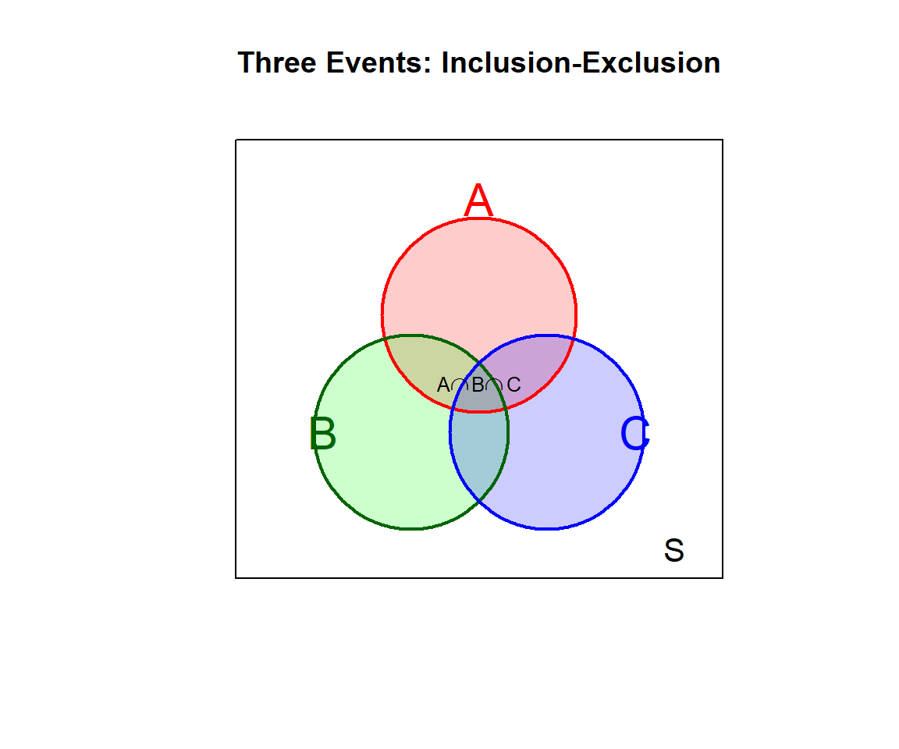

Lesson 6: Probability Basics

What We Did: Lesson 5
Review: Rendering & Turning In Your EDA
ImportantVantage
Let’s go to Vantage and walk through how to render and turn in your Exploratory Data Analysis assignment.
Turning On Your Code Chunks
WarningImportant: Enable Your Code!
Before rendering your final document, make sure to change eval = FALSE to eval = TRUE in your code chunk options. Otherwise, your code won’t actually run and your output won’t appear in the rendered document!
Rendering and Submitting Your Document
- Make sure all your code chunks have
eval: true - Click the “Render” button (or use Ctrl+Shift+K)
- Check that all outputs appear correctly
- Print to PDF (Ctrl+P, then “Save as PDF”)
- Submit the PDF file
TipKey Insight from Lessons 1-5
Descriptive statistics help us summarize data we have. Starting today, we learn how to make predictions about data we don’t have using probability!
What We’re Doing: Lesson 6
Objectives
- Compute probabilities of unions, intersections, and complements
- Understand the Kolmogorov Axioms (the foundation of probability)
- Apply basic probability rules to solve problems
Required Reading
Devore, Sections 2.1 and 2.2
Break!
Cal
Reese
DMath Volleyball!!
Math vs EECS
NotePreviously 8-1
9-1

Math vs EECS
NotePreviously 9-1
10-1
Introduction to Probability
From Description to Prediction
So far we’ve learned how to describe data:
- Visual displays (histograms, boxplots, scatterplots)
- Numerical summaries (mean, median, standard deviation)
Now we shift to probability theory, which allows us to:
- Model random phenomena
- Quantify uncertainty
- Make predictions about future observations
Sample Spaces and Events
What is an Experiment?
A random experiment is any process whose outcome is uncertain.
Examples:
- Flip a coin
- Roll a die
- Draw a card from a deck
- Measure the height of a randomly selected cadet
- Count the number of defects in a manufactured product
The Sample Space
The sample space \(S\) is the set of all possible outcomes of an experiment.
Examples:
| Experiment | Sample Space |
|---|---|
| Flip a coin | \(S = \{H, T\}\) |
| Roll a die | \(S = \{1, 2, 3, 4, 5, 6\}\) |
| Flip two coins | \(S = \{HH, HT, TH, TT\}\) |
| Roll two dice | \(S = \{(1,1), (1,2), ..., (6,6)\}\) (36 outcomes) |
Events
An event is a subset of the sample space \(S\).
Examples (rolling a die):
- Event \(A\) = “roll an even number” = \(\{2, 4, 6\}\)
- Event \(B\) = “roll a number greater than 4” = \(\{5, 6\}\)
- Event \(C\) = “roll a 7” = \(\{\}\) = \(\emptyset\) (impossible event)
- Event \(D\) = “roll a number from 1 to 6” = \(S\) (certain event)
Set Operations on Events
Since events are sets, we can combine them using set operations:
| Operation | Notation | Meaning |
|---|---|---|
| Union | \(A \cup B\) | “A or B (or both)” |
| Intersection | \(A \cap B\) | “A and B” |
| Complement | \(A^c\) or \(\bar{A}\) | “not A” |

Mutually Exclusive Events
Two events \(A\) and \(B\) are mutually exclusive (or disjoint) if they cannot both occur:
\[ A \cap B = \emptyset \]
Example (rolling a die):
- \(A\) = “roll an odd number” = \(\{1, 3, 5\}\)
- \(B\) = “roll an even number” = \(\{2, 4, 6\}\)
These are mutually exclusive: you cannot roll a number that is both odd and even!

The Kolmogorov Axioms
Defining Probability
Andrey Kolmogorov (1933) established three axioms that any valid probability function \(P\) must satisfy:
ImportantThe Three Axioms of Probability
Axiom 1 (Non-negativity): For any event \(A\), \[P(A) \geq 0\]
Axiom 2 (Normalization): For the entire sample space, \[P(S) = 1\]
Axiom 3 (Additivity): For any sequence of mutually exclusive events \(A_1, A_2, A_3, \ldots\), \[P(A_1 \cup A_2 \cup A_3 \cup \cdots) = P(A_1) + P(A_2) + P(A_3) + \cdots\]
Why These Axioms?
The axioms are minimal requirements that capture our intuition about probability:
- Axiom 1: Probabilities can’t be negative (no such thing as “-30% chance”)
- Axiom 2: Something must happen (total probability is 100%)
- Axiom 3: For non-overlapping events, probabilities add (if A and B can’t both happen, the chance of “A or B” is the sum of their individual chances)
From these three axioms, we can derive all other probability rules!
Basic Probability Rules
Rules Derived from the Axioms
Starting from the three axioms, we can prove:
NoteFundamental Probability Rules
Impossible Event: \(P(\emptyset) = 0\)
Bounded Probability: For any event \(A\), \(0 \leq P(A) \leq 1\)
Complement Rule: \(P(A^c) = 1 - P(A)\)
Monotonicity: If \(A \subseteq B\), then \(P(A) \leq P(B)\)
Equally Likely Outcomes
When all outcomes in the sample space are equally likely:
\[ P(A) = \frac{|A|}{|S|} = \frac{\text{number of outcomes in } A}{\text{total number of outcomes}} \]
Example: Rolling a fair die, what is \(P(\text{even})\)?
- Event \(A\) = \(\{2, 4, 6\}\), so \(|A| = 3\)
- Sample space \(S\) = \(\{1, 2, 3, 4, 5, 6\}\), so \(|S| = 6\)
- \(P(A) = \frac{3}{6} = \frac{1}{2}\)
Example: Drawing Cards
A standard deck has 52 cards: 13 ranks in each of 4 suits (hearts, diamonds, clubs, spades).
Standard Deck:
- 52 total cards
- 4 suits (hearts, diamonds, clubs, spades)
- 13 ranks per suit (A, 2-10, J, Q, K)
- 26 red cards (hearts, diamonds)
- 26 black cards (clubs, spades)
- 12 face cards (J, Q, K in each suit)
- 4 aces
What is the probability of drawing a heart?
\[P(\text{heart}) = \frac{13}{52} = \frac{1}{4} = 0.25\]
What is the probability of drawing a face card?
\[P(\text{face card}) = \frac{12}{52} = \frac{3}{13} \approx 0.231\]
The Complement Rule
Finding Probability of “Not A”
The complement rule states:
\[P(A^c) = 1 - P(A)\]
This is incredibly useful when it’s easier to calculate the probability of the complement!
Example: Not Rolling a 6
Problem: Roll a fair die once. What’s the probability of NOT rolling a 6?
Solution using the complement rule:
- Let \(A\) = “roll a 6”, so \(A^c\) = “not roll a 6”
- \(P(A) = \frac{1}{6}\)
- \(P(A^c) = 1 - P(A) = 1 - \frac{1}{6} = \frac{5}{6}\)
The Addition Rule (Inclusion-Exclusion)
For Two Events
For any two events \(A\) and \(B\):
\[P(A \cup B) = P(A) + P(B) - P(A \cap B)\]
Why subtract \(P(A \cap B)\)?
When we add \(P(A) + P(B)\), we count the intersection twice (once in \(A\), once in \(B\)). We subtract it to count it only once.

Special Case: Mutually Exclusive Events
When \(A\) and \(B\) are mutually exclusive (cannot both occur), then \(A \cap B = \emptyset\), so \(P(A \cap B) = 0\).
The addition rule simplifies to:
\[P(A \cup B) = P(A) + P(B)\]
This is just Axiom 3 for two events!

Example: Cards
Draw one card from a standard deck. What is the probability of drawing a heart OR a face card?
Let:
- \(A\) = draw a heart (13 cards)
- \(B\) = draw a face card (12 cards)
- \(A \cap B\) = draw a heart that is a face card (J, Q, K of hearts = 3 cards)
\[P(\text{heart}) = \frac{13}{52} = 0.25\]
\[P(\text{face card}) = \frac{12}{52} \approx 0.231\]
\[P(\text{heart AND face card}) = \frac{3}{52} \approx 0.058\]
\[P(\text{heart OR face card}) = P(\text{heart}) + P(\text{face card}) - P(\text{heart AND face card})\]
\[= \frac{13}{52} + \frac{12}{52} - \frac{3}{52} = \frac{22}{52} \approx 0.423\]
Extension to Three Events
For three events \(A\), \(B\), and \(C\):
\[P(A \cup B \cup C) = P(A) + P(B) + P(C) - P(A \cap B) - P(A \cap C) - P(B \cap C) + P(A \cap B \cap C)\]

The pattern continues: add single events, subtract pairs, add triples, subtract quadruples, etc.
NoteInclusion-Exclusion Pattern
This alternating add/subtract pattern is called the Inclusion-Exclusion Principle. It ensures we count each outcome exactly once.
Board Problems
Problem 1
A fair die is rolled. Let \(A\) = “roll an even number” and \(B\) = “roll a number greater than 3.”
NoteQuestions
- List the outcomes in \(A\), \(B\), \(A \cap B\), and \(A \cup B\)
- Calculate \(P(A)\), \(P(B)\), \(P(A \cap B)\), and \(P(A \cup B)\)
- Verify the addition rule: \(P(A \cup B) = P(A) + P(B) - P(A \cap B)\)
TipAnswers
- \(A = \{2, 4, 6\}\) (even numbers)
- \(B = \{4, 5, 6\}\) (numbers > 3)
- \(A \cap B = \{4, 6\}\) (even AND > 3)
- \(A \cup B = \{2, 4, 5, 6\}\) (even OR > 3)
- \(P(A) = \frac{3}{6} = \frac{1}{2}\)
- \(P(B) = \frac{3}{6} = \frac{1}{2}\)
- \(P(A \cap B) = \frac{2}{6} = \frac{1}{3}\)
- \(P(A \cup B) = \frac{4}{6} = \frac{2}{3}\)
- Verification: \[P(A) + P(B) - P(A \cap B) = \frac{1}{2} + \frac{1}{2} - \frac{1}{3} = \frac{3}{6} + \frac{3}{6} - \frac{2}{6} = \frac{4}{6} = \frac{2}{3} = P(A \cup B) \checkmark\]
Problem 2
A survey of 200 cadets found:
- 120 own a laptop
- 80 own a tablet
- 40 own both a laptop and a tablet
NoteQuestions
- What is the probability a randomly selected cadet owns a laptop?
- What is the probability a cadet owns a laptop OR a tablet (or both)?
- What is the probability a cadet owns neither device?
TipAnswers
Let \(L\) = owns laptop, \(T\) = owns tablet
\(P(L) = \frac{120}{200} = 0.60\)
Using inclusion-exclusion: \[P(L \cup T) = P(L) + P(T) - P(L \cap T) = \frac{120}{200} + \frac{80}{200} - \frac{40}{200} = \frac{160}{200} = 0.80\]
Using the complement rule: \[P(\text{neither}) = P((L \cup T)^c) = 1 - P(L \cup T) = 1 - 0.80 = 0.20\]
So 40 cadets (20%) own neither device.
Problem 3
Flip a fair coin 4 times.
NoteQuestions
- How many outcomes are in the sample space?
- What is the probability of getting exactly 2 heads?
- What is the probability of getting at least 1 head?
TipAnswers
Each flip has 2 outcomes, so \(|S| = 2^4 = 16\) total outcomes
To get exactly 2 heads, we need to choose which 2 of the 4 flips are heads. Number of ways = \(\binom{4}{2} = \frac{4!}{2!2!} = 6\) The outcomes: HHTT, HTHT, HTTH, THHT, THTH, TTHH
\(P(\text{exactly 2 heads}) = \frac{6}{16} = \frac{3}{8} = 0.375\)
- Using the complement:
- \(P(\text{no heads}) = P(\text{TTTT}) = \frac{1}{16}\)
- \(P(\text{at least 1 head}) = 1 - P(\text{no heads}) = 1 - \frac{1}{16} = \frac{15}{16} = 0.9375\)
Verification:
| Simulated (100,000 trials) | Exact | |
|---|---|---|
| P(exactly 2 heads) | \(\approx 0.375\) | \(\frac{6}{16} = 0.375\) |
| P(at least 1 head) | \(\approx 0.938\) | \(\frac{15}{16} = 0.9375\) |
Problem 4
At a small Army post, vehicle breakdowns occur as follows:
- \(P(\text{engine problem}) = 0.30\)
- \(P(\text{transmission problem}) = 0.20\)
- \(P(\text{both engine and transmission}) = 0.05\)
NoteQuestions
- Are engine and transmission problems mutually exclusive? Why or why not?
- What is the probability of an engine problem OR a transmission problem?
- What is the probability of neither type of problem?
TipAnswers
Let \(E\) = engine problem, \(T\) = transmission problem
No, they are not mutually exclusive because \(P(E \cap T) = 0.05 \neq 0\). A vehicle can have both problems simultaneously.
Using inclusion-exclusion: \[P(E \cup T) = P(E) + P(T) - P(E \cap T) = 0.30 + 0.20 - 0.05 = 0.45\]
Using the complement: \[P(\text{neither}) = 1 - P(E \cup T) = 1 - 0.45 = 0.55\]
Problem 5
In a company, the probability that an employee works remotely is 0.40, the probability they have a flexible schedule is 0.50, and the probability they have at least one of these benefits is 0.70.
NoteQuestions
- What is the probability an employee has both benefits?
- What is the probability an employee has neither benefit?
TipAnswers
Let \(R\) = works remotely, \(F\) = flexible schedule
Rearranging the addition rule to solve for the intersection: \[P(A \cup B) = P(A) + P(B) - P(A \cap B)\] \[P(A \cap B) = P(A) + P(B) - P(A \cup B)\] \[P(R \cap F) = 0.40 + 0.50 - 0.70 = 0.20\]
Using the complement: \[P(\text{neither}) = 1 - P(R \cup F) = 1 - 0.70 = 0.30\]
Summary
Key Takeaways
ImportantCore Concepts
Sample Space and Events:
- Sample space \(S\) = set of all possible outcomes
- Event = subset of \(S\)
- Events can be combined using union (\(\cup\)), intersection (\(\cap\)), and complement (\(^c\))
Kolmogorov Axioms:
- \(P(A) \geq 0\) for any event \(A\)
- \(P(S) = 1\)
- For mutually exclusive events: \(P(A_1 \cup A_2 \cup \cdots) = P(A_1) + P(A_2) + \cdots\)
Key Rules:
- Complement Rule: \(P(A^c) = 1 - P(A)\)
- Addition Rule: \(P(A \cup B) = P(A) + P(B) - P(A \cap B)\)
- If \(A\) and \(B\) are mutually exclusive: \(P(A \cup B) = P(A) + P(B)\)
Before You Leave
Today
- Sample spaces, events, and set operations
- The three Kolmogorov Axioms of probability
- Complement rule: \(P(A^c) = 1 - P(A)\)
- Addition rule (Inclusion-Exclusion): \(P(A \cup B) = P(A) + P(B) - P(A \cap B)\)
Any questions?
Next Lesson
Lesson 7: Conditional Probability
- Conditional probability \(P(A|B)\)
- Independence of events
- Multiplication rule
Upcoming Graded Events
- WebAssign 2.1-2.2 - Due before Lesson 7
- Exploratory Data Analysis - Due Lesson 9
- WPR I - Lesson 16